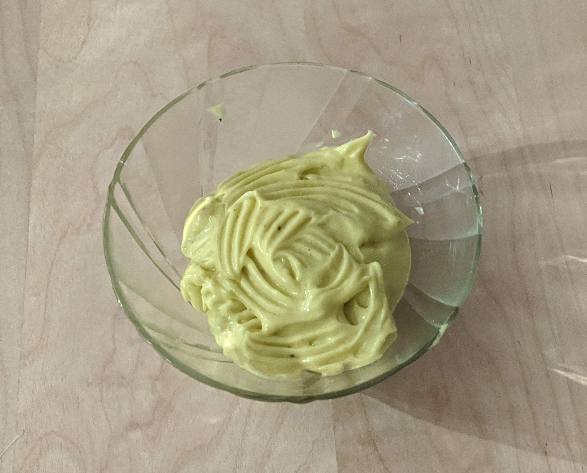

..@..♦.D.

|
Présentation 
|
Blog
|
Recettes
|

Pour, allez, à la louche, 3 ou 4 personnes (2 en cas de gros sacs) :
Remarque : cette recette est plus facile avec un robot doté d'un fouet. Si la mayonnaise se sépare et devient liquide, l'explication la plus probable est qu'on a ajouté trop d'huile trop vite. Dans ce cas, on peut tenter de refaire la première étape (avec juste le jaune d'œuf et la moutarde), et de faire le reste de la recette en utilisant la mayonnaise ratée à la place de l'huile d'olive ; en prenant bien soin de ne pas aller trop vite.
Remarque 2 : une fois que la mayonnaise est bien solide, on peut la mélanger avec d'autres choses en quantité raisonnable, et normalement elle reste solide. Une cuillère à soupe de sriracha pour un côté pimenté, une cuillère à café d'épices en poudre (cumin, curry, paprika…) pour ajouter des saveurs, ou trois-quatre gousses d'ail noir écrasé pour un chouette goût fermenté.